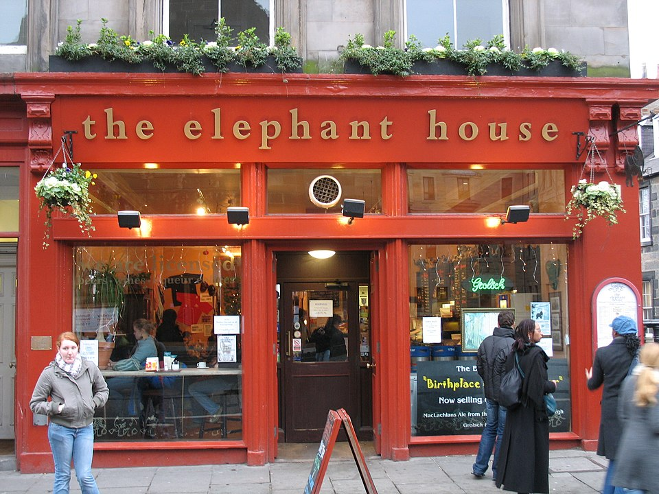

Embora escreva, geralmente, sob o nome de J. K. Rowling, seu nome verdadeiro é Joanne Rowling. Antes da publicação do primeiro romance, a editora Bloomsbury temia que garotos não se interessassem por um livro escrito por uma mulher, então seus editores pediram que ela utilizasse duas iniciais e seu sobrenome. Como não tinha nome do meio, escolheu a letra K como a segunda inicial de sua pseudônimo, em homenagem a sua avó paterna Kathleen.Rowling gosta de ser chamada de Jo. Depois de seu segundo casamento, a escritora passou a usar, em algumas ocasiões, o nome Joanne Murray para assuntos pessoais.Durante o Leveson Inquiry, ela prestou depoimento sob o nome de Joanne Kathleen Rowling e seu nome na lista do Who's Who se encontra como Joanne Kathleen Rowling.
Rowling nasceu de Peter James Rowling, um engenheiro aeronáutico da Rolls-Royce, e Anne Rowling, uma técnica de ciência, no dia 31 de julho de 1965 em Yate, Gloucestershire, Inglaterra. Seus pais se conheceram em um trem que partiu da Estação de King's Cross para Arbroath em 1964. Eles se casaram em 14 de março de 1965. Um de seus bisavôs maternos, Dugald Campbell, era escocês, nascido em Lamlash, Ilha de Arran. O avô materno de sua mãe, Louis Volant, era francês, e foi premiado com a Cruz de Guerra pela bravura que teve em defender a vila Courcelles-le-Comte durante a Primeira Guerra Mundial. Originalmente, Rowling acreditava que ele havia ganho a Legião de Honra durante a guerra, como disse quando recebeu em 2009. Ela, porém, descobriu a verdade seis anos depois, quando participou de um episódio da série britânica de genealogia Who Do You Think You Are?, onde pensou que tivesse sido outro Louis Volant que ganhou a Legião de Honra. Quando ela ouviu sobre a história de bravura e descobriu que a Cruz de Guerra era para soldados "comuns" como seu bisavô, que era garçom, declarou que a Cruz de Guerra era melhor que a Legião de Honra.
Em 1982, Rowling prestou os exames da Universidade de Oxford, porém não foi aceita, e obteve o Bacharelado de artes em Francês e Estudos Clássicos na Universidade de Exeter. Martin Sorrell, professor de Francês nessa universidade, lembra-se da escritora como "uma estudante extremamente competente, que sempre usava uma jaqueta jeans e tinha um cabelo escuro e que, em termos acadêmicos, fazia o que tinha que fazer". Rowling se lembra de não ter trabalhado muito, preferindo ler Dickens e Tolkien. Como muitos adolescentes, ela se interessou pela música pop, ouvindo The Smiths e Siouxsie Sioux, cuja aparência (cabelos penteados e delineador de olhos pretos) adotou e continuou a usar ao chegar à universidade. Depois de um ano estudando em Paris, Rowling se formou em 1986 e se mudou para Londres para trabalhar como secretária e investigadora na Anistia Internacional.Em 1988, Rowling escreveu uma pequena redação sobre a época em que estudou Cultura Clássica, intitulada "What was the Name of that Nymph Again? or Greek and Roman Studies Recalled" ("Qual era o Nome daquela Ninfa Mesmo? ou Estudos Gregos e Romanos Lembrados); ela foi publicada pelo Pegasus, jornal da Universidade de Exeter.
Carreira

The Elephant House, um dos cafés em Edimburgo em que Rowling escreveu o primeiro livro de Harry Potter.
Em 1995, Rowling terminou seu manuscrito de Harry Potter e a Pedra Filosofal em uma velha máquina de escrever.Após a resposta entusiástica de Bryony Evens, um revisor que foi convidado a analisar os três primeiros capítulos do livro, a Christopher Little Literary Agency concordou em representar Rowling em busca de uma editora. O livro foi entregue a doze editoras, das quais todas recusaram o manuscrito.Um ano depois, ela finalmente recebeu sinal verde (e 1500 libras de adiantamento) do editor Barry Cunningham da Bloomsbury, uma editora de Londres.A decisão de publicar o livro de Rowling se deve muito a Alice Newton, a filha de oito de anos do presidente da editora, que leu o primeiro capítulo e imediatamente exigiu o segundo a seu pai.Embora a Bloomsbury tenha concordado em em publicar o livro, Cunningham disse que aconselhou Rowling a procurar um emprego, já que as chances de conseguir dinheiro através de um livro infantil eram mínimas.Logo depois, em 1997, Rowling recebeu uma concessão de 8 mil libras da Scottish Arts Council para continuar escrevendo a série.
Em junho de 1997, a Bloomsbury publicou A Pedra Filosofal com uma impressão inicial de mil cópias, sendo que 500 delas foram distribuídas em bibliotecas. Hoje em dia, tais cópias são avaliadas entre 16 e 25 mil libras.Cinco meses mais tarde, o livro ganhou seu primeiro prêmio, um Nestlé Smarties Book Prize. Em fevereiro, o romance ganhou o British Book Awards na categoria de Livro Infantil do Ano, e mais tarde, o Children's Book Award. Em meados de 1998, um leilão foi realizado nos Estados Unidos para vender os direitos de publicação do livro, ganho pela Scholastic Inc., por US$ 105 000. Rowling disse que "quase morreu" quando ouviu a novidade. Em outubro de 1998, a Scholastic publicou A Pedra Filosofal nos Estados Unidos sob o título de Harry Potter and the Sorcerer's Stone (Harry Potter e a Pedra do Feiticeiro), uma mudança que Rowling diz se arrepender de ter feito e que teria tentado alterar se estivesse em uma posição melhor na época.Rowling mudou-se de seu apartamento com o dinheiro da Scholastic para 19 Hazelbank Terrace, em Edimburgo.
Sua sequela, Harry Potter e a Câmara Secreta, foi publicada em julho de 1998 e permitiu que Rowling ganhasse outro Nestlé Smarties Prize.Em dezembro de 1999, o terceiro livro, Harry Potter e o Prisioneiro de Azkaban, ganhou o mesmo prêmio, fazendo de Rowling a primeira pessoa a ganhar três vezes seguidas.Ela então retirou o quarto livro de Harry Potter da disputa para permitir que outros livros tivessem uma oportunidade justa. Em janeiro de 2000, o Prisioneiro de Azkaban ganhou o Whitbread Children's Book of the Year, embora tenha perdido o prêmio de livro do ano para a tradução de Beowulf, por Seamus Heaney.
O quarto livro, Harry Potter e o Cálice de Fogo, foi lançando simultaneamente no Reino Unido e nos Estados Unidos no dia 8 de julho de 2000 e teve vendagem recorde em ambos os países. Cerca de 372.775 cópias do livro foram vendidas no primeiro dia no Reino Unido, quase se igualando ao número de vendas de O Prisioneiro de Azkaban durante seu primeiro ano.Nos Estados Unidos, o livro vendeu três milhões de cópias em suas primeiras 48 horas, quebrando todos os recordes.Rowling disse que teve uma crise enquanto escrevia o romance e teve que reescrever um capítulo inúmeras vezes para consertar um problema com a trama.Rowling foi nomeada Autora do Ano de 2000 pela British Book Awards.
Um espaço de tempo de três anos ocorreu entre o lançamento de O Cálice de Fogo e o quinto romance da série, Harry Potter e a Ordem da Fênix. Esse intervalo levou a imprensa a especular que Rowling havia desenvolvido bloqueio criativo, rumores que ela negou.Mais tarde, Rowling disse que escrever o livro foi um biscate, que poderia ter sido mais curto e que estava ficando sem tempo e energia enquanto tentava terminá-lo.
O sexto livro, Harry Potter e o Enigma do Príncipe, foi lançado em 16 de julho de 2005. O romance também quebrou recordes de vendas, vendendo nove milhões de cópias nas primeiras 24 horas de lançamento.Em 2006, O Enigma do Príncipe recebeu o prêmio de Livro do Ano no British Book Awards.
O título do sétimo e último livro de Harry Potter foi anunciado em 21 de dezembro de 2006 como Harry Potter e as Relíquias da Morte.Em fevereiro de 2007, foi relatado que Rowling escreveu em um busto de Hermes em seu quarto no Hotel Balmoral que havia terminado o sétimo livro naquele cômodo em 11 de janeiro de 2007.Harry Potter e as Relíquias da Morte foi lançado no dia 21 de julho de 2007 (0:01 BST)e quebrou os recordes de todos os seus antecessores como o livro mais vendido de todos os tempos.Ele vendeu 11 milhões de cópias no primeiro dia de lançamento no Reino Unido e nos Estados Unidos.O último capítulo do livro foi uma das primeiras coisas da série que ela escreveu.
Harry Potter é agora uma marca global com um valor estimado em 15 bilhões de dólares, e, a partir do Cálice de Fogo, vem definindo recordes consecutivamente como os livros mais vendidos da história.A série, com um total de 4195 páginas,foi traduzida, ao todo ou em parte, para 65 línguas.
Os livros de Harry Potter também ganharam reconhecimento por despertar um interesse na leitura entre os jovens na época em que as crianças são ensinadas a abandonar os livros por computadores e televisões,embora seja relatado que, apesar da enorme absorção dos livros, os adolescentes continuam a recusar a leitura.
Em outubro de 1998, a Warner Bros. comprou os direitos para os filmes dos dois primeiros livros por uma quantia de sete dígitos.A adaptação de Harry Potter e a Pedra Filosofal foi lançada em 16 de novembro de 2001 e Harry Potter e a Câmara Secreta em 15 de novembro de 2002.Ambos os filmes foram dirigidos por Chris Columbus. A versão cinematográfica de Harry Potter e o Prisioneiro de Azkaban foi lançada no dia 4 de junho de 2004 e dirigida por Alfonso Cuarón. O quarto filme, Harry Potter e o Cálice de Fogo foi dirigido por Mike Newell e lançado em 18 de novembro de 2005. Harry Potter e a Ordem da Fênix foi estreado em 11 de julho de 2007.David Yates dirigiu e Michael Goldenberg escreveu o roteiro, tendo assumido a posição de Steven Kloves. Harry Potter e o Enigma do Príncipe teve sua data de estreia em 15 de julho de 2009.David Yates dirigiu novamente e Kloves voltou a escrever o roteiro. A Warner Bros. filmou o episódio final da série, Harry Potter e as Relíquias da Morte, em duas partes, com a parte um sendo lançada em 19 de novembro de 2010 e a parte dois em 15 de julho de 2011. Yates dirigiu ambos os filmes.
A Warner Bros. levou em consideração os desejos de Rowling ao elaborar seu contrato. Uma de suas principais condições era que todo o elenco fosse britânico,que foi atendida. Rowling também exigiu que a Coca-Cola, a empresa que promovia os filmes nos produtos, doasse 18 milhões de dólares para a Reading Is Fundamental, uma instituição de caridade americana, e também para vários outros programas comunitários.
O primeiro, o sexto, o sétimo e o oitavo filmes foram escritos por Steve Kloves; Rowling auxiliou-o no processo de escrita para assegurar que os roteiros não comprometessem os livros futuros da série.Ela contou a Alan Rickman (Severo Snape) e Robbie Coltrane (Rúbeo Hagrid) alguns segredos sobre seus personagens que ainda não haviam sido revelados nos livros.Daniel Radcliffe (Harry Potter) perguntou-lhe se Harry morria em algum momento da série, Rowling respondeu que sim, dizendo "Você tem uma cena de morte", não respondendo explicitamente a pergunta. Steven Spielberg recebeu a proposta de dirigir o primeiro filme, porém desistiu. A imprensa tem afirmado repetidamente que Rowling teve algo a ver com sua desistência, porém ela declarou que não tinha voz em quem dirigia os filmes e que não teria vetado Spielberg. A primeira escolha de Rowling para diretor foi Terry Gilliam, membro da Monty Python, porém a Warner Bros. queria alguém familiar e escolheu Columbus.
Rowling ganhou certo controle criativo nos filmes, revisando os roteiros e atuando como produtora nas duas partes de As Relíquias da Morte.
Rowling e os produtores David Heyman e David Barron, junto com os diretores David Yates, Mike Newell e Alfonso Cuarón, receberam um BAFTA por Melhor Contribuição Britânica para o Cinema em 2011, em homenagem à franquia de filmes de Harry Potter.
Em setembro de 2013, a Warner Bros. anunciou uma "parceria criativa" com Rowling, baseada em uma série de filmes sobre Newt Scamander, autor de Animais Fantásticos e Onde Habitam. O primeiro filme, escrito por Rowling, foi lançado em novembro de 2016 e tem seus acontecimentos 70 anos antes dos eventos da série principal. Em 2016, foi anunciado que a série consistiria em cinco filmes, com o segundo programado para ser lançado em novembro de 2018.
Christopher "Chris" Columbus (Spangler, Pensilvânia, 10 de setembro de 1958) é um diretor norte-americano. Dirigiu Harry Potter e a Pedra Filosofal, o primeiro filme da série Harry Potter e a Câmara Secreta, o segundo da série. Ele parou de dirigir a série pois queria curtir sua família. Contudo, aceitou o convite de J.K. Rowling e ajudou a produzir o terceiro filme, Harry Potter e a Prisioneiro de Azkaban
Michael Cormac Newell(St Albans, 28 de março de 1942) é um cineasta inglês.
Nascido em Hertfordshire, recebeu sua educação na St. Albans School e na Universidade de Cambridge.
O quarto filme,Harry Potter e o Cálice de Fogo foi dirigido por ele e lançado em 18 de novembro de 2005.

Alfonso Cuarón Orozco(Cidade do México, 28 de Novembro de 1961) é um roteirista, diretor de fotografia, editor, produtor e cineasta mexicano vencedor do Oscar de Melhor Diretor em duas ocasiões. Em 2004, a Warner Brothers lhe ofereceu a direção do terceiro filme da série de livros Harry Potter. O filme chamado Harry Potter e o prisioneiro de Azkaban é atualmente o filme de maior bilheteria do diretor.
David Yates (8 de Outubro de 1963) é um cineasta britânico que dirigiu filmes de curta a longa-metragem e produções para a televisão.
Yates se tornou proeminente com o grande público dirigindo os últimos quatro filmes da série cinematográfica Harry Potter sendo ele Harry Potter e a Ordem da Fênix,Harry Potter e o Enigma do Príncipe, Harry Potter e as Relíquias da Morte – Parte 1 e 2 . Esses trabalhos lhe trouxeram sucesso crítico e comercial.